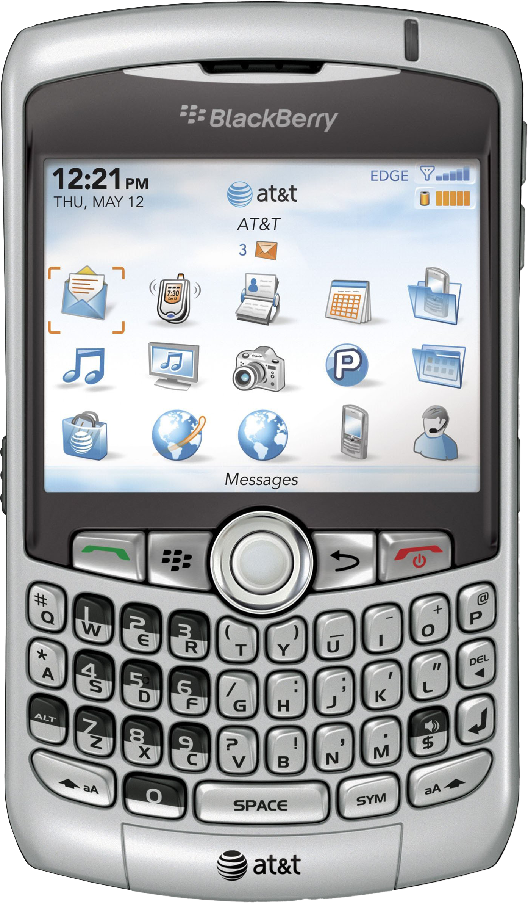
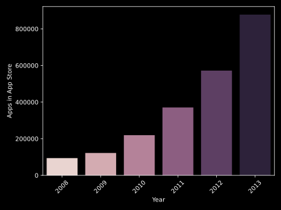
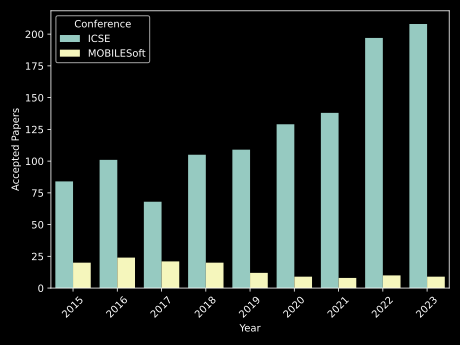
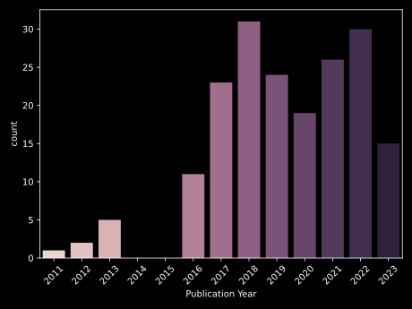
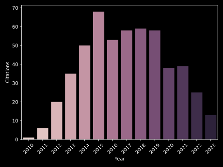
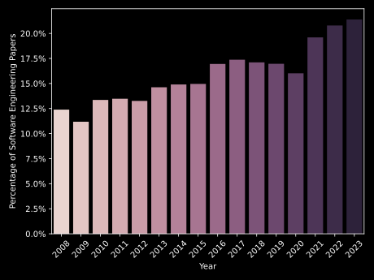
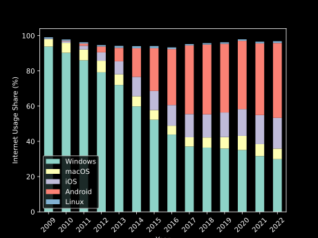

The End of Mobile Software Engineering (As We Know It)
Mobile Software Engineering
Before 2008

2008
Introduction of the App Store

Exponential Growth

Source: https://www.pocketgamer.biz/metrics/app-store/app-count/
Recognized Research Need
Despite the development of 300,000+ mobile applications, there’s still not much formal research around their engineering processes.
Wasserman (2010)
[…] the growth of this new computing platform has outpaced the software engineering work tailored to mobile application development.
Dehlinger and Dixon (2011)
Research Agenda of Wasserman (2010)
- User Experience
- Code reuse
- Networking
- Energy efficiency
- Data integrity
- Testing
- Portability and cross-platform development
Dedicated Conferences
The End of Mobile Software Engineering (As We Know It)…
MOBILESoft vs ICSE


Research Agenda


…And I Feel Fine
Mobile Is Eating The World

End of Need for Separate Research
- Mobile is more relevant than ever
- Separate research need is coming to an end
- Good opportunities for future research
Existing Research
- Reconsider research results
- Is mobile-specific research generalizable?
- Are there undiscovered classic results applicable to mobile software engineering?
Future Research
- Mobile-related research should consider generalizability
- Software Engineering research should consider implications for mobile devices